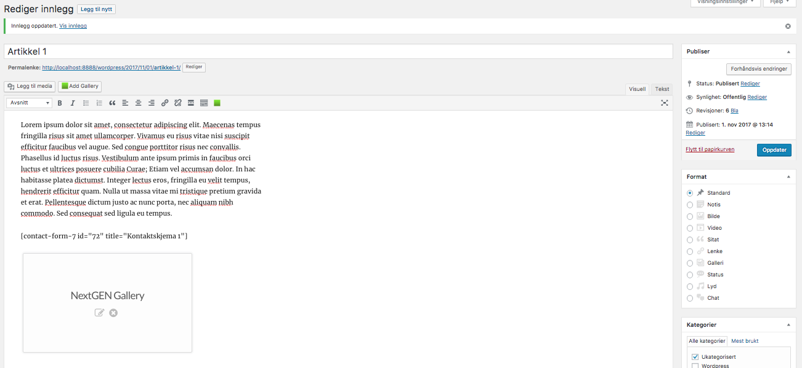
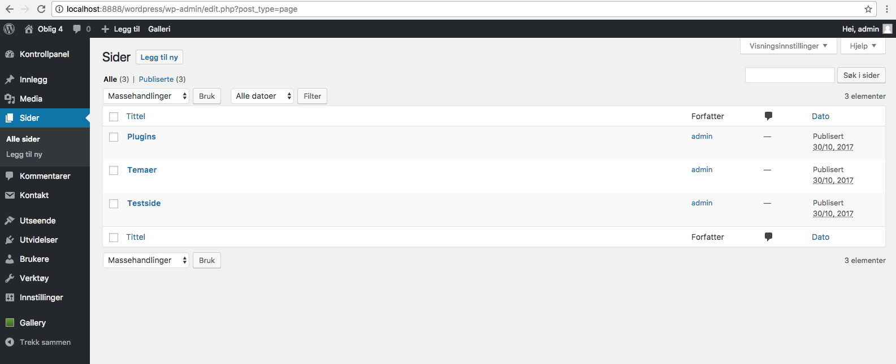
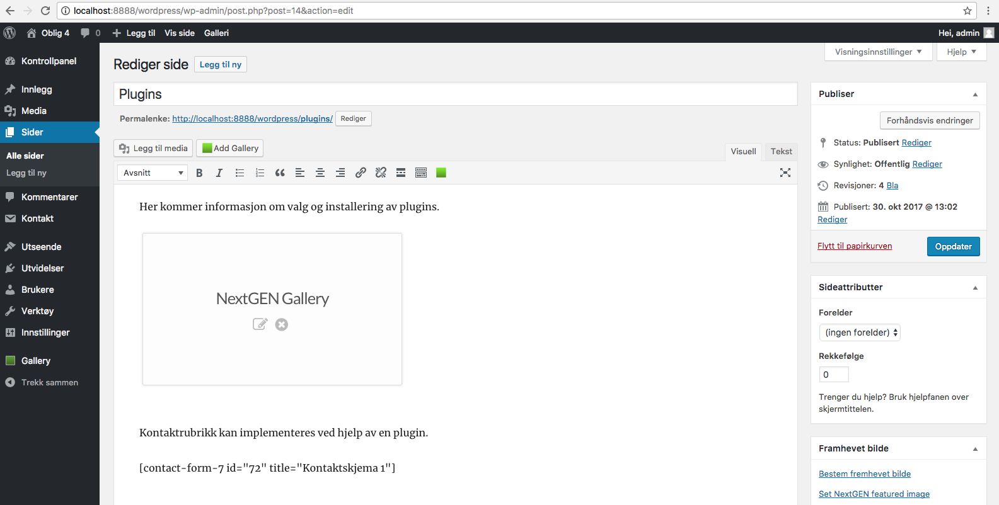

Artikler og sider i WordPress
Når man skal lage en artikkel i WordPress klikker man enkelt på fanen "Innlegg" fra kontrollpanelet. Her møter man en standard skriveplattform. Når man har skrevet ferdig, trykker man på "Publiser". WordPress tar av seg resten og publiserer innlegget. Innlegget blir nå liggende øverst på bloggen. Her ser man at jeg har brukt plugins i innlegget.

I WordPress kan man ha flere brukere slik at flere kan skrive artikler uten å gå via administartoren. Det kan være restriksjoner på brukerne slik at de kun kan virke som forfatter f.eks.
Legg til sider
Sider kan legges til i WordPress. Dette gjøres via fanen "Sider" fra kontrollpanelet. Dette kan være sider som ikke baserer seg på bloggvirksomhet. Bildet vi møter er veldig likt det som benyttes når vi skriver innlegg. Sidene kan linkes opp fra menyene.  